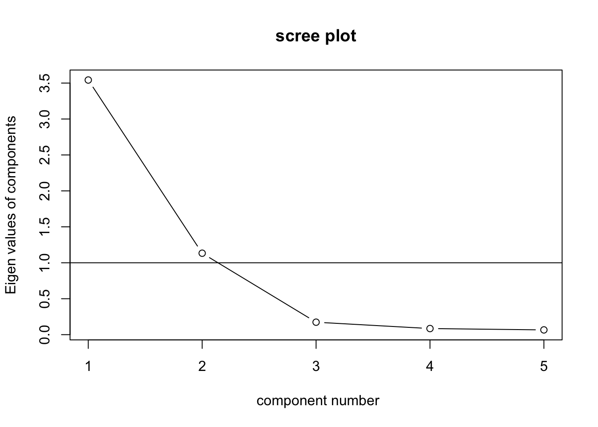
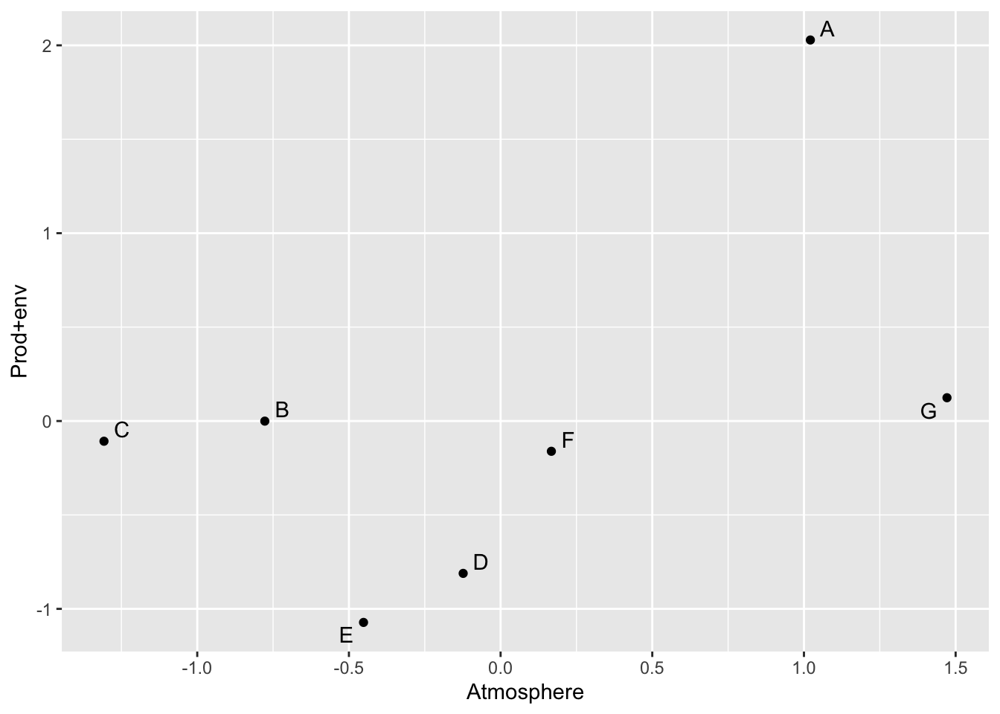
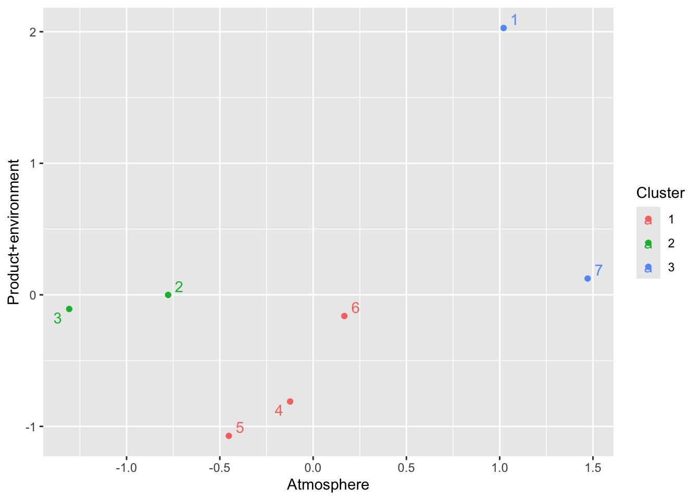

アンケートデータと知覚マップ
本節では、消費者の製品に対する知覚を図示化する形で企業のポジショニングを可視化する知覚マップの作成プロセスを紹介する。消費者の知覚について理解するためには、消費者に関する（主に質問紙調査による）データが必要である。しかしながら、企業のポジションは企業同士の相対的な位置を表している。そのため、消費者レベルで収集したデータを企業レベルに集計し、企業に関する結果として図示化する必要がある。本節で紹介する知覚マップの作成は以下の手順で構成される。
- 複数の製品属性を捉えた、いくつかの企業に対する評価を聞く調査実施する（ただし、調査回答収集プロセスは本書では省略）。
- 消費者をサンプル（行）とするデータセットを、企業レベルの集計データ構造に変換する。
- 各企業をサンプルとする因子分析を実行し、いくつかの因子を抽出する。
- 抽出された各因子の因子に関する得点（因子スコアや平均値）をサンプル（企業）に割り当てる。
- 2つの因子に関する得点の関係をプロットする。
ここでは、7つのカフェチェーンに対する5つの項目について関して11人の消費者から回答を得たと想定する演習用データを用いる。ここでは、以下の5つの各項目に対して5点リッカート尺度を用いて回答を得ている。
- 提供されている飲み物の品質が高い
- 提供されている食べ物の品質が高い
- この企業の店舗は気持ちよく過ごせる環境である
- この企業の店内は楽しい雰囲気に包まれている
- この企業の店内は魅力的である
データ構造の変更
多くのテキスト等で紹介、共有されている知覚マップの作成方法やそこで利用されているデータは、すでに企業レベルで集計されている事が多い。しかしながら、消費者から複数の企業に対する複数属性についてのアンケートを取ると、多くの場合表11 のような構造を持つだろう。表11では、“y1_1” と “y2_1” はそれぞれ企業1への質問1、企業1への質問2を表している。そのため、例えば、“y1_2” は企業2への質問1を表している。なお、照井・佐藤（2022）のように、新聞等ですでに公表されている企業レベルで集計された調査結果を利用する場合、本節で紹介するデータの変換作業は不要である。
df_cafe <- readxl::read_excel("data/2021_cafeSurvey.xlsx")
knitr::kable(head(df_cafe), caption = "カフェデータ概要")| ID | y1_1 | y2_1 | y3_1 | y4_1 | y5_1 | y1_2 | y2_2 | y3_2 | y4_2 | y5_2 | y1_3 | y2_3 | y3_3 | y4_3 | y5_3 | y1_4 | y2_4 | y3_4 | y4_4 | y5_4 | y1_5 | y2_5 | y3_5 | y4_5 | y5_5 | y1_6 | y2_6 | y3_6 | y4_6 | y5_6 | y1_7 | y2_7 | y3_7 | y4_7 | y5_7 |
|---|---|---|---|---|---|---|---|---|---|---|---|---|---|---|---|---|---|---|---|---|---|---|---|---|---|---|---|---|---|---|---|---|---|---|---|
| 1 | 5 | 5 | 5 | 5 | 5 | 5 | 5 | 5 | 5 | 5 | 5 | 5 | 5 | 5 | 5 | 5 | 4 | 4 | 3 | 3 | 5 | 5 | 2 | 2 | 2 | 3 | 4 | 3 | 2 | 1 | 4 | 5 | 5 | 3 | 5 |
| 2 | 4 | 4 | 5 | 3 | 4 | 3 | 4 | 2 | 2 | 2 | 4 | 3 | 4 | 2 | 3 | 3 | 4 | 3 | 2 | 3 | 4 | 4 | 4 | 2 | 4 | 2 | 4 | 4 | 2 | 4 | 4 | 4 | 4 | 2 | 4 |
| 3 | 4 | 4 | 3 | 5 | 5 | 2 | 2 | 3 | 3 | 4 | 2 | 2 | 3 | 3 | 3 | 2 | 4 | 3 | 3 | 3 | 3 | 3 | 3 | 3 | 3 | 2 | 4 | 2 | 4 | 2 | 4 | 4 | 5 | 4 | 5 |
| 4 | 4 | 4 | 3 | 4 | 4 | 4 | 4 | 4 | 4 | 5 | 3 | 3 | 2 | 3 | 2 | 3 | 3 | 5 | 3 | 4 | 2 | 2 | 4 | 5 | 3 | 5 | 3 | 3 | 3 | 4 | 3 | 4 | 4 | 4 | 4 |
| 5 | 4 | 4 | 3 | 4 | 3 | 3 | 3 | 4 | 2 | 3 | 3 | 3 | 2 | 2 | 3 | 4 | 4 | 4 | 2 | 3 | 3 | 4 | 2 | 2 | 2 | 3 | 5 | 3 | 2 | 4 | 3 | 4 | 3 | 3 | 3 |
| 6 | 4 | 3 | 4 | 3 | 4 | 4 | 3 | 4 | 4 | 4 | 2 | 3 | 3 | 3 | 3 | 3 | 3 | 2 | 3 | 2 | 4 | 3 | 1 | 2 | 2 | 4 | 5 | 4 | 4 | 4 | 4 | 3 | 3 | 3 | 3 |
本節では、知覚マップの作成についてデータ構造の変更から説明する。慣習としては、消費者についての平均値や合計をとって、企業\(\times\)項目の構造を持ったデータに修正する。
#IDについての情報は含まない形で、データをlong型に変える。
#"names_to" と "values_to" によって列名が定義される。
data_reshaped <- df_cafe %>%
pivot_longer(-ID, names_to = "company", values_to = "y")
#企業番号と変数をそれぞれ "company" と "k" として割り振る。
##"str_extract"によって正規表現を抽出
##"parse_number"によって特定の値を抽出
data_reshaped <- data_reshaped %>%
mutate(k = str_extract(company, "y[0-9]"),
company = str_extract(company, "_[0-9]") %>%
parse_number())
#"k"をwide型に変換し、変数の列を作成する。
data_reshaped <- data_reshaped %>%
pivot_wider(names_from = "k", values_from = "y")
#企業名の割振りと、企業レベルデータへの集計
data_renamed <- data_reshaped %>%
mutate(company = case_when(
company ==1 ~ "A",
company ==2 ~ "B",
company ==3 ~ "C",
company ==4 ~ "D",
company ==5 ~ "E",
company ==6 ~ "F",
company ==7 ~ "G",
TRUE~"else"
))
brand_based <- data_renamed %>%
group_by(company) %>%
summarize(q1_sum = sum(y1),
q2_sum = sum(y2),
q3_sum = sum(y3),
q4_sum = sum(y4),
q5_sum = sum(y5)) %>%
tibble::column_to_rownames(var = "company")
knitr::kable(brand_based, caption = "変換後データ") | q1_sum | q2_sum | q3_sum | q4_sum | q5_sum | |
|---|---|---|---|---|---|
| A | 45 | 41 | 46 | 45 | 45 |
| B | 35 | 34 | 37 | 37 | 38 |
| C | 32 | 33 | 38 | 37 | 34 |
| D | 38 | 40 | 39 | 32 | 36 |
| E | 39 | 39 | 36 | 31 | 35 |
| F | 37 | 44 | 39 | 35 | 39 |
| G | 43 | 45 | 44 | 35 | 44 |
上の表を確認すると、データの観測（行）がAからGの7つの企業になっていることが伺える。これによって、消費者の回答データから企業レベルのデータへ変換できていることがわかるだろう。
因子分析の実行
前述の通りデータ構造が企業レベルに変換できたら次は因子分析と図示化テクニックを使って知覚マップを作成する。以下では、簡単にそのプロセスを紹介する。まずはスクリープロットと固有値によって因子数を検討する。図27 によると、傾きの変化、固有値どちらの観点からも2因子を採用することにする。

Figure 27: カフェデータスクリープロット
続いて、2因子モデルで因子分析を実行し、因子を解釈する。分析の結果、1つ目の因子は問1、2, 3, 5に高い因子負荷量を持っている。一方で、2つ目の因子は、問4に高い因子負荷量を持っている。また、因子1よりは低いものの、問3についても高い因子負荷量を有している。そこで、因子1を「製品と環境（Prod\(+\)env）」、因子2を「店舗の雰囲気（Atmosphere）」と名付けることとする。また着目すべきは、因子1は問4（この企業の店内は楽しい雰囲気に包まれている）に、因子2は問2（提供されている食べ物の品質が高い）に対して負の因子負荷量を持っていることである。そのため、因子1と2は、因子の値が高まると、これらそれぞれの観測変数が低くなると考えられる。消費者の知覚・評価の中で、これらの因子や項目の間になんらかのトレードオフ構造があるかもしれない。
## Factor Analysis using method = minres
## Call: fa(r = brand_based, nfactors = 2, rotate = "promax")
## Standardized loadings (pattern matrix) based upon correlation matrix
## MR1 MR2 h2 u2 com
## q1_sum 0.84 0.12 0.82 0.1825 1.0
## q2_sum 1.04 -0.38 0.83 0.1694 1.3
## q3_sum 0.58 0.52 0.91 0.0892 2.0
## q4_sum -0.25 1.10 1.00 0.0023 1.1
## q5_sum 0.67 0.44 0.93 0.0654 1.7
##
## MR1 MR2
## SS loadings 2.64 1.86
## Proportion Var 0.53 0.37
## Cumulative Var 0.53 0.90
## Proportion Explained 0.59 0.41
## Cumulative Proportion 0.59 1.00
##
## With factor correlations of
## MR1 MR2
## MR1 1.0 0.5
## MR2 0.5 1.0
##
## Mean item complexity = 1.4
## Test of the hypothesis that 2 factors are sufficient.
##
## df null model = 10 with the objective function = 5.54 with Chi Square = 19.39
## df of the model are 1 and the objective function was 0.02
##
## The root mean square of the residuals (RMSR) is 0
## The df corrected root mean square of the residuals is 0.01
##
## The harmonic n.obs is 7 with the empirical chi square 0 with prob < 0.97
## The total n.obs was 7 with Likelihood Chi Square = 0.04 with prob < 0.84
##
## Tucker Lewis Index of factoring reliability = 5.793
## RMSEA index = 0 and the 90 % confidence intervals are 0 0.618
## BIC = -1.91
## Fit based upon off diagonal values = 1
## Measures of factor score adequacy
## MR1 MR2
## Correlation of (regression) scores with factors 0.98 1.00
## Multiple R square of scores with factors 0.96 1.00
## Minimum correlation of possible factor scores 0.92 0.99fs2 <- data.frame(Perc_cafe$scores)
brand_based <- brand_based %>%
rownames_to_column(var = "rowname")
fs2 <- fs2 %>%
rownames_to_column(var = "rowname")
brand_based2 <- left_join(brand_based, fs2, by = "rowname")
p1 <- ggplot(data = brand_based2,
mapping = aes(x = MR1, y = MR2))
p1 + geom_point() +
geom_text_repel(mapping = aes(label = rowname)) +
labs(x = "Atmosphere", y = "Prod+env")
Figure 28: カフェ知覚マップ
図28 は因子分析の結果を視覚化した知覚マップである。 これを見ると、企業Aはどちらの因子についても高い評価を得ている事がわかる。一方で企業Cは、製品や環境については標準的な評価を得ているものの、雰囲気については評価がとても低くなっている。反対に、企業DやEのように、製品や環境について悪い評価を得ている企業も存在する。本節では簡単に図28 についての紹介を行っているが、実際にレポートを書く際には、このような結果から得られる含意や実務的示唆について詳しく論じる必要があることに注意してほしい。
本節では、データ構造の変換も含む知覚マップの作成手順について紹介した。このような方法により、「消費者が企業をどのように評価しているか」という観点から、自社や競合のポジションを把握する事ができる。また、この企業レベルでのデータに対して因子分析とクラスター分析を組み合わせることによって、図29 のような図を描画できる。この演習データの場合には少し意義が見出しづらいかもしれないが、図29のような可視化はより明確な実務的含意につながりうる。具体的には、2つの因子間において類似する企業を特定することができ、市場の競争環境（特に誰が競合となりうるかなど）について可視化できると考えられる。
cafe_cluster <- brand_based2 %>%
column_to_rownames(var = "rowname") %>%
select(MR1, MR2)
#事前の階層的クラスター分析等は省略
#便宜的に3クラスターを想定している
cl_cafe<- kmeans(cafe_cluster,3)
clus_fa_cafe <- data.frame(cl_cafe$cluster)
clus_fa_cafe$rowname <- rownames(clus_fa_cafe)
brand_based2 <- left_join(brand_based2, clus_fa_cafe, by = "rowname")
brand_based2$cl_cafe.cluster <- factor(brand_based2$cl_cafe.cluster)
##Visualizing the clusters with 2 factors
p1 <- ggplot(data = brand_based2,
mapping = aes(x = MR1, y = MR2, color = cl_cafe.cluster))
p1 + geom_point() +
geom_text_repel(mapping = aes(label = rownames(brand_based2))) +
labs(x = "Atmosphere", y = "Product+environment",
color = "Cluster",shape = "Cluster")
Figure 29: 知覚マップ & クラスター
因子分析は、複数の観測変数の背後にある潜在的な因子を捉えようとする手法である。マーケティングや消費者行動では、この潜在的な因子に基づく議論も多く、因子分析は非常に重要な手法の1つである。特に、因子分析を行って因子を特定するだけではなく、それを知覚マップとして図示化したり、クラスター分析と組み合わせた分析を行うことで実務的含意を含む発見につながることが期待される。